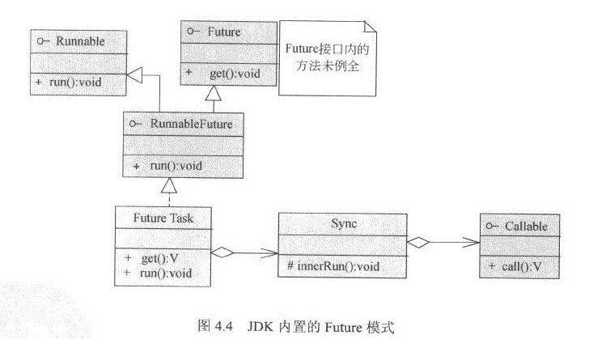

并行程序Future模式
2016-03-22 23:10:04
Future模式有点类似商品订单。比如在进行网上购物时，当看中某一件商品时，就可以提交订单。当订单处理完毕后，便可在家里等待商品送货上门。卖家根据订单从仓库里取货，并配送到客户手上。在大部分情况下，商家对订单的处理并不那么快，有时甚至需要几天时间。而在这段时间内，客户完全不必傻傻地在家里等候，可以出门处理其他事物。
将此例类推到程序设计中，当某一段程序提交了一个请求，期望得到一个答复。但非常不幸的是，服务程序对这个请求的处理可能很慢，比如，这个请求可能是通过互联网、HTTP或者Web Service等并不太高效的方式调用的。在传统的单线程环境下，调用函数是同步的，也就是说它必须等到服务程序返回结果后，才能进行其他处理。而在Future模式下，调用方式改为异步，而先等待返回的时间段，在主调用函数中，则可用于处理其他事务。
public class Test {
public static void main(String[] args) {
Client client = new Client();
//
Data data = client.request("name");
System.out.println("请求完毕");
try {
//这里可以用一个sleep代替对其他业务逻辑的处理
//在处理这些业务逻辑的过程中，RealData被创建，从而充分利用了等待时间
//Thread.sleep(2000);
} catch (Exception e) {
// TODO: handle exception
}
//使用真实的数据
System.out.println("数据 = " + data.getResult());
}
}
Client主要实现了获取FutureData，开启构造RealData的线程，并在接受请求后，很快地返回FutureData:
public class Client {
public Data request(final String queryStr){
final FutureData future = new FutureData();
new Thread(){
public void run() {
//RealData的构建很慢，所以在单独的线程中进行
RealData realdata = new RealData(queryStr);
future.setRealData(realdata);
};
}.start();
return future;
}
}
public interface Data {
public String getResult();
}
public class RealData implements Data {
protected final String result;
public RealData(String para){
//RealData的构造可能很慢，需要用户等待很久，这里使用sleep模拟
StringBuffer sb = new StringBuffer();
for(int i = 0; i < 10; i++){
sb.append(para);
try {
Thread.sleep(200);
} catch (Exception e) {
// TODO: handle exception
}
}
result = sb.toString();
}
public String getResult() {
return result;
}
}
FutureData实现了一个快速返回的RealData包装。它只是一个包装，或者说是一个RealData的虚拟实现。因此，它可以很快被构造并返回。当使用FutureData的getResult()方法时，程序会阻塞，等待RealData被注入到程序中，才使用RealData的getResult()方法 返回。 注意：FutureData是Future模式的关键，它实际上是真实数据RealData的代理，封装了获取RealData的等待过程。
public class FutureData implements Data{
protected RealData realdata = null;//FutureData是RealData的包装
protected boolean isReady = false;
public synchronized void setRealData(RealData realdata){
if(isReady){
return;
}
this.realdata = realdata;
isReady = true;
notifyAll();//RealData已经被注入，通知getResult()
}
public synchronized String getResult() {
while(!isReady){
try {
wait();//一直等待，直到RealData被注入
} catch (Exception e) {
// TODO: handle exception
}
}
return realdata.result;//由RealData实现
}
}
JDK的内置实现
Future模式是如此常用，以至于在JDK的并发包中，就已经内置了一种Future模式的实现。JDK中的实现相当复杂的，并提供了更为丰富的多线程控制功能，但其中的基本用意和核心概念是完全一致的。
其中，最为重要的模块是FutureTask类，它实现了Runnable接口，作为单独的线程运行。在其run()方法中，通过Sync内部类，调用Callable接口，并维护Callable接口的返回对象。当使用FutureTask.get()方法时，将返回Callable接口的返回对象。除此以外，通过Future接口提供的一系列方法，FutureTask还可以对任务本身进行其他控制操作。
注意：JDK内置的Future模式功能强大，除了基本的功能外，它还可以取消Future任务，或者设定Future任务的超时时间。
Callable接口是一个用户自定义的实现。在应用程序中，通过实现Callable接口的call()方法，指定FutureTask的实际工作内容和返回对象。
public class RealData implements Callable<String> {
private String para;
public RealData(String para){
this.para = para;
}
public String call() throws Exception {
//这里是真实的业务逻辑，其执行可能很慢
StringBuffer sb = new StringBuffer();
for(int i = 0; i < 10; i++){
sb.append(para);
try {
Thread.sleep(200);
} catch (Exception e) {
// TODO: handle exception
}
}
return sb.toString();
}
}
public class Test {
public static void main(String[] args) throws Exception {
FutureTask<String> future = new FutureTask<String>(new RealData("a"));
ExecutorService executor = Executors.newFixedThreadPool(1);
//执行FutureTask，相当于上例中的client.request("a")发送请求
//在这里开启线程进行RealData的call()执行
executor.submit(future);
System.out.println("请求完毕");
try {
Thread.sleep(2000);
} catch (Exception e) {
// TODO: handle exception
}
//相当于上例中的data.getResult()，取得call()方法的返回值
//如果call()方法没有执行完成，则依然会等待
System.out.println("数据 = " + future.get());
}
}